⛔ 절대 금지
매트리스 측면의 손잡이는 당기지 말 것. 내부 구조가 손상될 수 있습니다. 토퍼를 끌어서 이동 금지 — 반드시 들어서 이동.
⚠️ 설치 전 확인
- 비닐 개봉 후 깨끗한 장갑 착용 (오염 방지)
- 매트리스와 토퍼의 헤드/풋 방향이 일치하는지 확인
- 지퍼는 헤드 측면부터 시작 (반대로 하면 어긋남)
제품 소개 및 설치 전 확인 사항
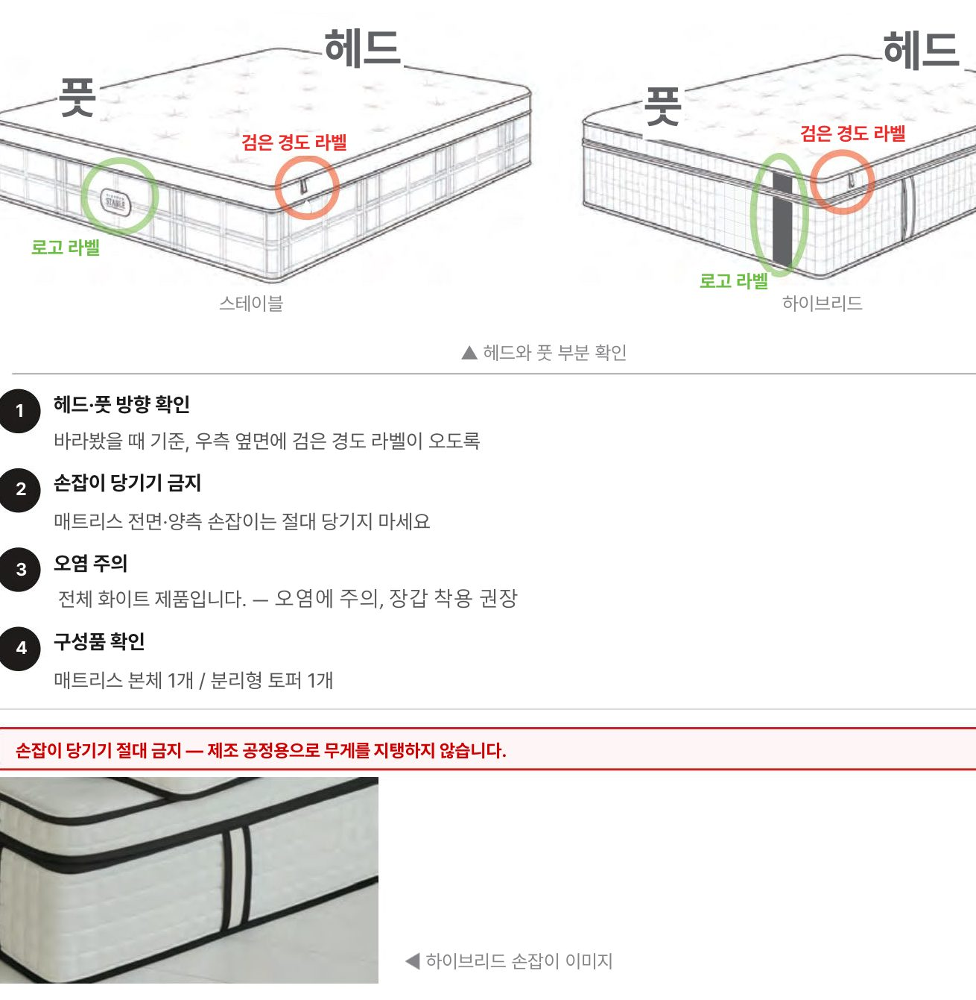
설치 단계
-
장갑 착용 후 개봉
비닐 개봉 전 깨끗한 장갑을 먼저 착용합니다. 전면 / 양 옆 비닐을 차례로 개봉.
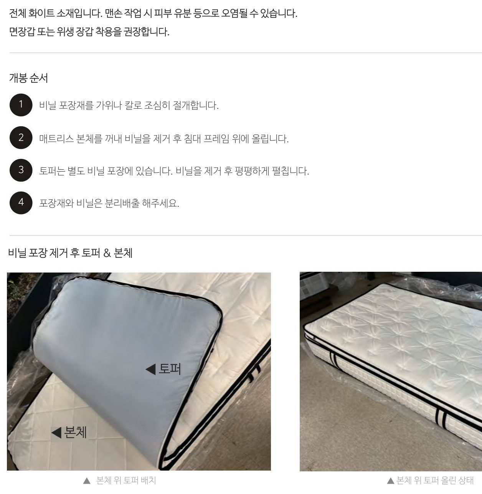
📍 토퍼는 박스 안에 별도 포장되어 있습니다. 비닐 포장 그대로 둔 상태로 꺼내 둡니다. -
방향 확인 & 토퍼 배치
매트리스를 침대 프레임 위에 올린 후, 라벨로 헤드 / 풋 방향을 확인. 토퍼를 매트리스 위에 정렬해 올립니다.
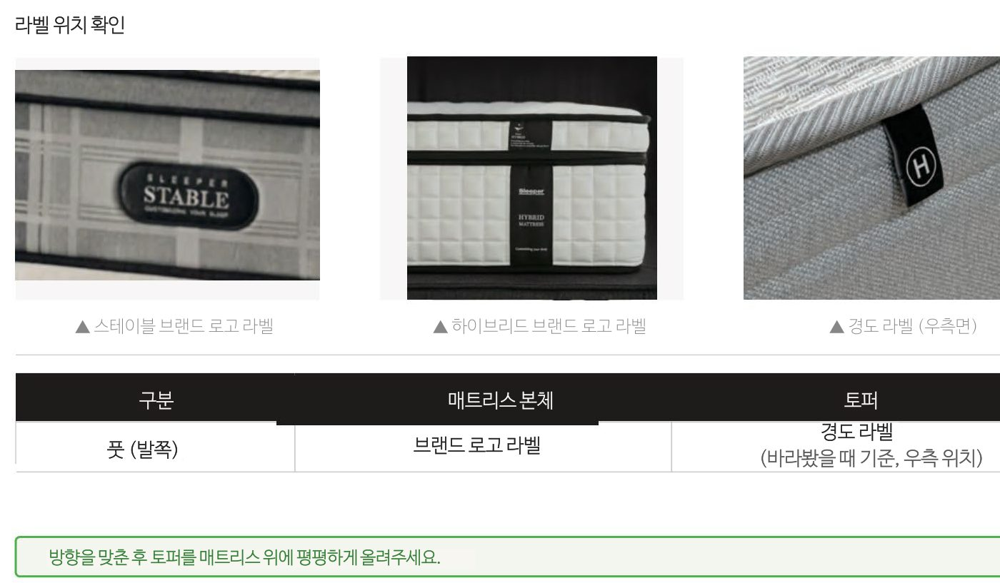
-
헤드 측면부터 지퍼 시작
지퍼는 반드시 헤드 측면 한쪽 끝에서 시작합니다. 천천히 한 손으로 토퍼를 누르고, 다른 손으로 지퍼를 당겨 결합.
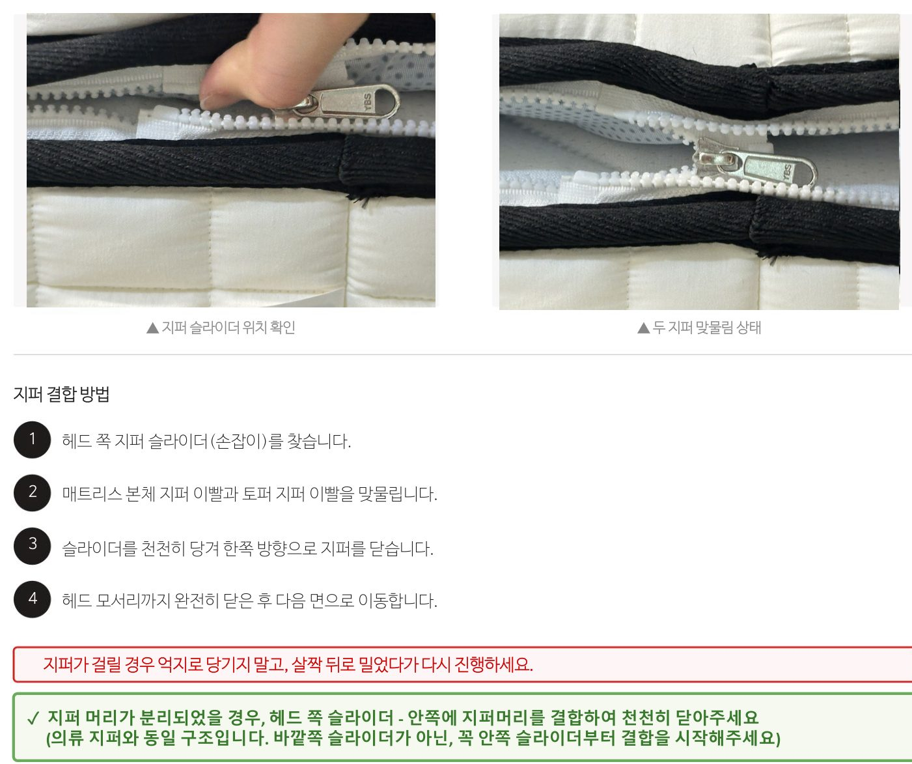
-
측면 따라 지퍼 마무리
헤드 측면 → 좌·우 측면 → 풋 측면 순서로 매트리스 네 변을 따라 지퍼를 끝까지 결합합니다.
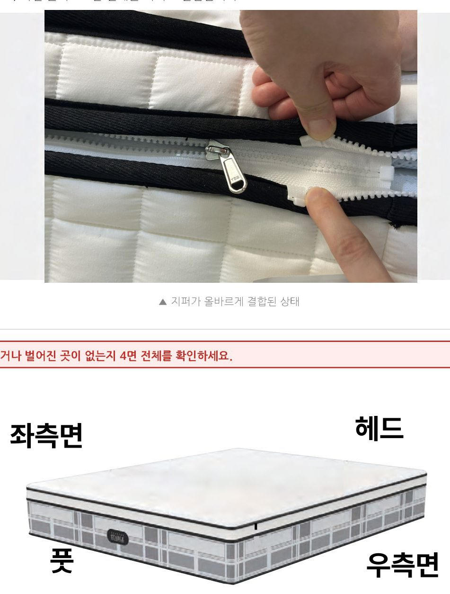
-
설치 완료 + 라벨 확인
네 면 모두 지퍼가 끝까지 닫혔는지 확인. 토퍼가 매트리스 보다 튀어나오거나 처지지 않는지 점검.
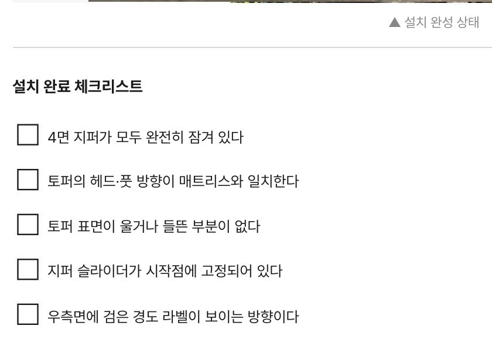
최종 인수 체크리스트
- 장갑 착용 후 비닐 개봉 (오염 0)
- 매트리스·토퍼 헤드/풋 방향 일치
- 네 변 지퍼 끝까지 잠김
- 매트리스 손잡이 손상 없음
📐 전체 원본 도면 (PDF)
각 단계 위 이미지가 작거나 자세히 보고 싶을 때는 아래 페이지를 클릭하여 확대하세요. (총 9 페이지)
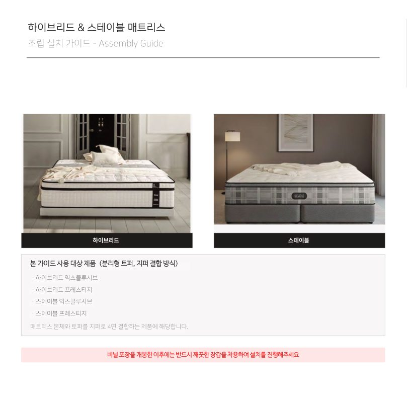
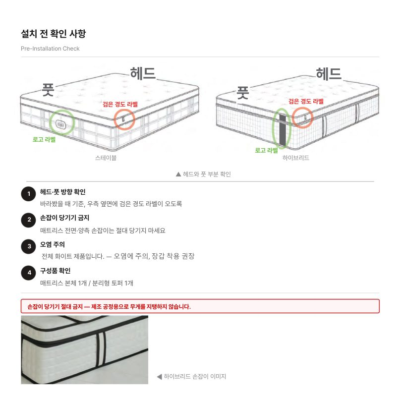
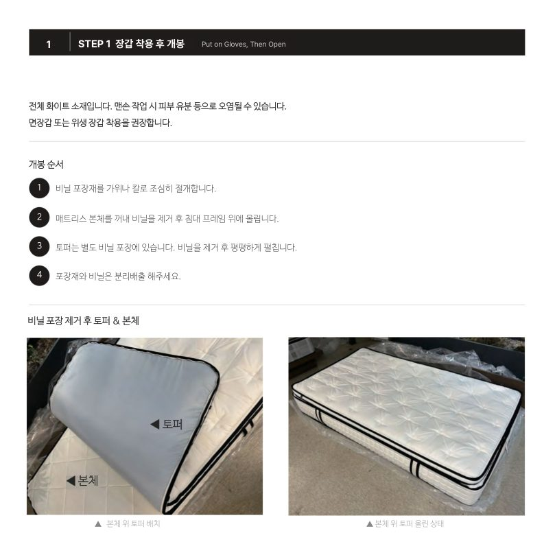
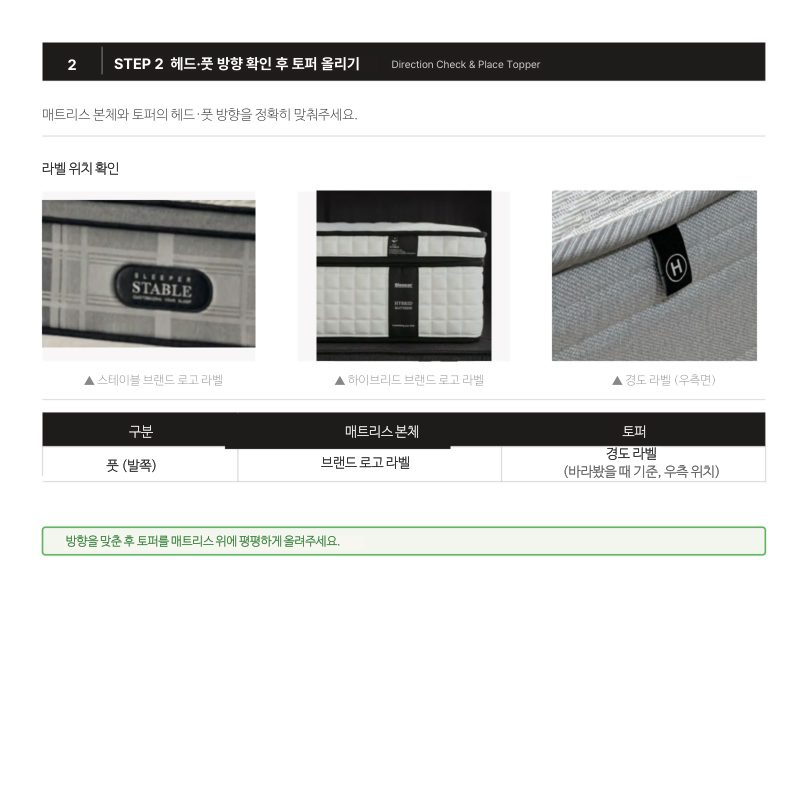
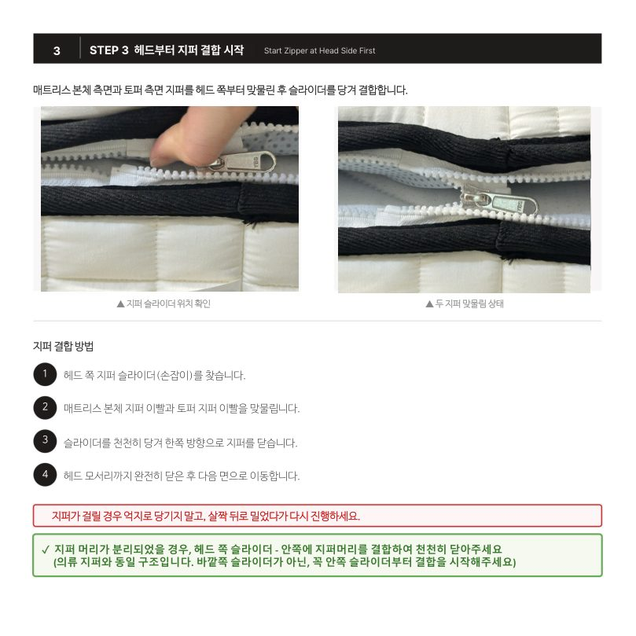
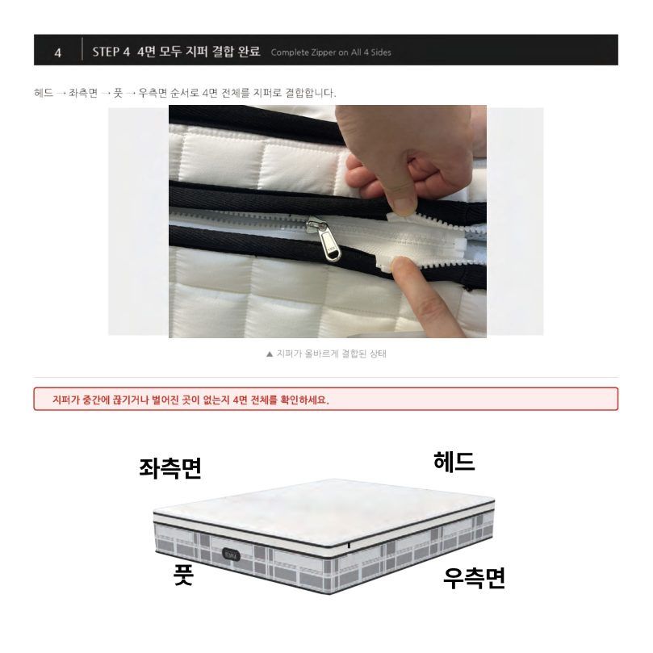
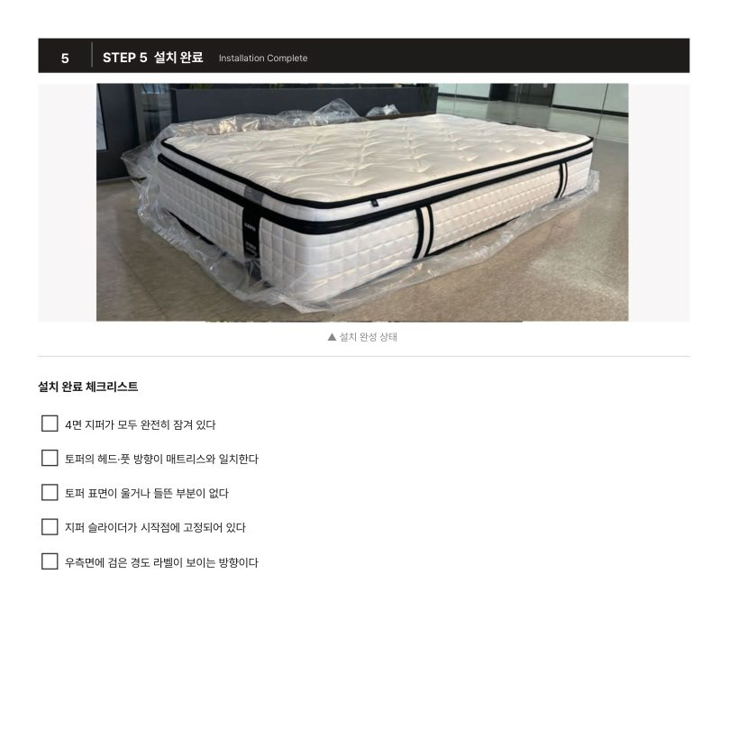
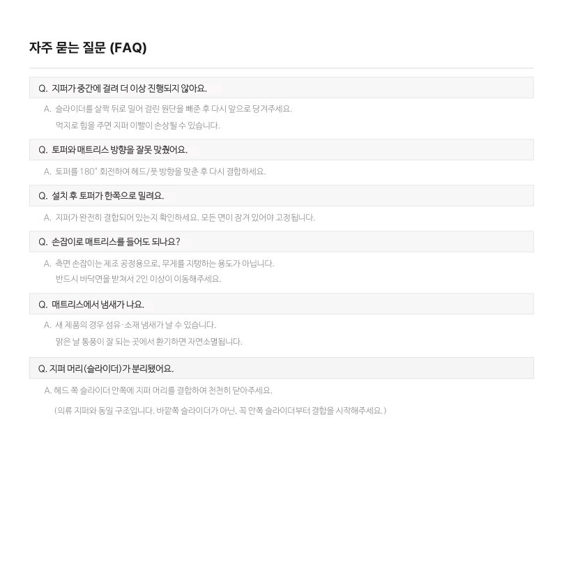